🎯 จุดประสงค์ของบทเรียน
- สามารถประยุกต์ใช้กฎและหลักเกณฑ์พื้นฐานของพีชคณิตบูลีนได้
- สามารถประยุกต์ใช้ทฤษฎีบทของ DeMorgan กับสมการบูลีนได้
- เขียนอธิบายวงจรการเชื่อมต่อของเกทต่าง ๆ ให้อยู่ในรูปของสมการบูลีนได้
- ประเมินผลลัพธ์ของสมการบูลีนที่กำหนดให้ได้
🧭 ความเชื่อมโยงกับ มคอ.3
CLO2 อธิบายเทคนิคการลดรูปวงจรตรรกะ
CLO4 อธิบายหลักการตรรกะเชิงเลขเบื้องต้นในการนำไปใช้สร้างวงจรดิจิทัลและการประยุกต์ใช้ในการสร้างระบบคอมพิวเตอร์
กิจกรรม: บรรยาย / แบบฝึกหัด · ปฏิบัติการ: พิสูจน์ความเทียบเท่าของวงจร
การประเมิน: แบบฝึกหัดและรายงานผลการทดลอง (20%) · สอบกลางภาค บทที่ 1–6 (30%)
4.1 ที่มาของพีชคณิตบูลีน
ในปี ค.ศ. 1854 จอร์จ บูล (George Boole) ได้ตีพิมพ์ผลงานที่มีชื่อว่า “An Investigation of the Laws of Thought, on Which Are Founded the Mathematical Theories of Logic and Probabilities” ซึ่งผลงานนี้เป็นสิ่งที่ทำให้ พีชคณิตเชิงตรรก (logical algebra) ได้ถือกำเนิดขึ้น และทุกวันนี้เราเรียกกันว่า พีชคณิตบูลีน (Boolean Algebra) ซึ่งเป็นวิธีที่สะดวกและเป็นระบบเพื่อการอธิบายและวิเคราะห์การปฏิบัติการของวงจรเชิงตรรก และนักคณิตศาสตร์นาม คล็อด แชนนอน (Claude Shannon) ได้นำผลงานของบูลมาประยุกต์ใช้สำหรับการวิเคราะห์และออกแบบวงจรลอจิก โดยในปี ค.ศ. 1938 เขาได้เขียนวิทยานิพนธ์หัวข้อ “A Symbolic Analysis of Relay and Switching Circuits” เอาไว้
4.2 การปฏิบัติการและสมการบูลีน
พีชคณิตบูลีนเป็นคณิตศาสตร์สำหรับระบบดิจิทัล ซึ่งเป็นความรู้พื้นฐานที่สำคัญอย่างมากสำหรับผู้เรียนด้านนี้ เพื่อที่จะเข้าใจและสามารถทำการวิเคราะห์วงจรลอจิกได้ สำหรับในบทนี้อาจมีคำศัพท์ภาษาอังกฤษหลายคำที่ขอใช้คำทับศัพท์ภาษาอังกฤษไปเลย เพื่อไม่ให้เกิดความเข้าใจที่ผิดเพี้ยนอันเนื่องมาจากคำแปลภาษาไทยที่ไม่สามารถหามาทดแทนได้อย่างตรงและกระชับ ซึ่ง 3 คำแรกได้แก่คำว่า variable, complement และ literal ซึ่งจะขออธิบายนิยามเอาไว้ดังต่อไปนี้
- Variable เป็นสัญลักษณ์ (ซึ่งต่อไปจะใช้อักษรพิมพ์ใหญ่) ที่ใช้สำหรับเป็นตัวแทนของค่าปริมาณทางลอจิก (logical quantity) ซึ่ง variable อันหนึ่งสามารถจะมีค่าเป็น 1 หรือ 0 ก็ได้
- Complement คือนิเสธของ variable และจะบ่งได้ด้วยการใส่ขีดกำกับเอาไว้ด้านบนอักษรของ variable นั้น ๆ ตัวอย่างเช่น complement ของ variable A ก็คือ A ถ้า A = 1 จะได้ A = 0 และถ้า A = 0 จะได้ A = 1 complement ของ A เราอ่านออกเสียงว่า “น็อตเอ” หรือ “เอบาร์” ก็ได้ ในบางตำราอาจมีการใช้เครื่องหมาย prime (′) เพื่อบ่งว่าเป็น complement ของ variable ใด ๆ เช่น B′ เพื่อบอกว่าเป็น complement ของ B เป็นต้น
- Literal หมายถึง variable หรือ complement ของ variable
4.2.1 การบวกแบบบูลีน (Boolean Addition)
การบวกแบบบูลีนเทียบเท่ากับปฏิบัติการ OR รูปข้างล่างนี้จะแสดงให้เห็นถึงความสัมพันธ์ของการบวกแบบบูลีนกับ OR gate
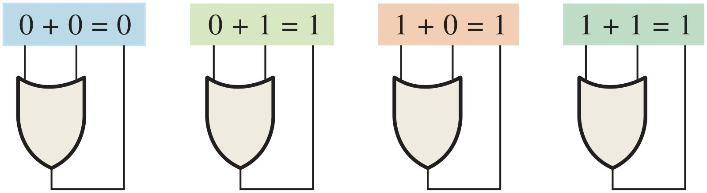
Sum term ในพีชคณิตบูลีนหมายถึงผลรวมของ literal ส่วนในเรื่องของวงจรลอจิก sum term คือผลลัพธ์ของปฏิบัติการ OR โดยที่ไม่มี AND เข้ามาเกี่ยวข้อง ตัวอย่างของ sum term ได้แก่ A + B, A + B, A + B + C และ A + B + C + D เป็นต้น
Sum term จะมีค่าเท่ากับ 1 เมื่อ literal ตัวใดตัวหนึ่งหรือมากกว่านั้นเป็น 1 และ sum term จะมีค่าเป็น 0 เฉพาะกรณีที่ทุก literal มีค่าเป็น 0 ทั้งหมด
จงหาค่าของ A, B, C และ D ที่ทำให้ sum term A + B + C + D มีค่าเท่ากับ 0
แสดงวิธีทำ
สำหรับ sum term ที่มีผลลัพธ์เป็น 0 นั้น เกิดจากการที่ทุก literal ที่ประกอบอยู่นั้นมีค่าเป็น 0 ดังนั้นเราจะได้ว่า A = 0, B = 0 (B = 1), C = 0 และ D = 0 (D = 1)
4.2.2 การคูณแบบบูลีน (Boolean Multiplication)
การคูณแบบบูลีนเทียบเท่ากับปฏิบัติการ AND รูปข้างล่างนี้จะแสดงให้เห็นถึงความสัมพันธ์ของการคูณแบบบูลีนกับ AND gate
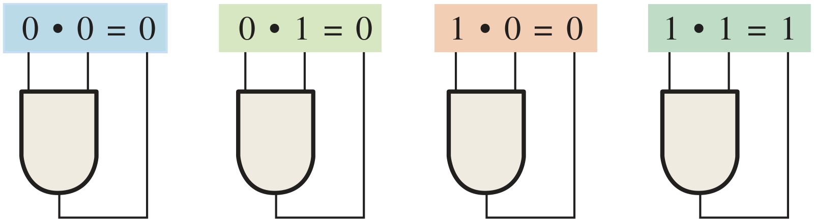
Product term ในพีชคณิตบูลีนหมายถึงผลคูณของ literal ส่วนในเรื่องของวงจรลอจิก product term คือผลลัพธ์ของปฏิบัติการ AND โดยที่ไม่มี OR เข้ามาเกี่ยวข้อง ตัวอย่างของ product term ได้แก่ AB, AB, ABC และ ABCD เป็นต้น
Product term จะมีค่าเท่ากับ 1 เฉพาะกรณีที่ทุก literal มีค่าเท่ากับ 1 เท่านั้น และ product term จะมีค่าเป็น 0 เมื่อ literal ตัวใดตัวหนึ่งหรือมากกว่านั้นมีค่าเท่ากับ 0
จงหาค่าของ A, B, C และ D ที่ทำให้ product term ABCD มีค่าเท่ากับ 1
แสดงวิธีทำ
สำหรับ product term ที่มีผลลัพธ์เป็น 1 นั้น เกิดจากการที่ทุก literal ที่ประกอบอยู่นั้นมีค่าเป็น 1 ดังนั้นเราจะได้ว่า A = 1, B = 1 (B = 0), C = 1 และ D = 1 (D = 0)
4.3 กฎและหลักเกณฑ์ของพีชคณิตบูลีน
เนื่องจากพีชคณิตบูลีนเป็นคณิตศาสตร์แขนงหนึ่ง ซึ่งจะต้องมีกฎและหลักเกณฑ์ (laws and rules) อยู่มากมาย ในที่นี้จะกล่าวถึงส่วนที่มีความสำคัญต่อการเรียนรู้สำหรับการออกแบบและวิเคราะห์วงจรลอจิก
4.3.1 กฎของพีชคณิตบูลีน
กฎพื้นฐานของพีชคณิตบูลีนก็เหมือนกับกฎของพีชคณิตทั่วไป ได้แก่
- กฎการสลับที่ (commutative law) สำหรับการบวกและการคูณ
- กฎการเปลี่ยนกลุ่ม (associative law) สำหรับการบวกและการคูณ
- กฎการกระจาย (distributive law)
ต่อไปจะเป็นการอธิบายกฎที่ได้กล่าวมาด้วยการใช้ตัวแปร 2 หรือ 3 ตัวแปรเพื่อทำความเข้าใจ แต่ในการใช้งานจริงจะไม่มีข้อจำกัดในเรื่องจำนวนตัวแปร
4.3.1.1กฎการสลับที่
กฎการสลับที่ของการบวกสำหรับตัวแปร 2 ตัวสามารถเขียนได้ดังนี้
กฎนี้กล่าวว่าลำดับของตัวแปรที่ทำการ OR กันนั้นสามารถสลับที่กันได้โดยจะไม่เกิดความแตกต่างของผลลัพธ์ เมื่อเราประยุกต์ใช้พีชคณิตบูลีนกับวงจรลอจิก การบวกกับการ OR จึงเป็นเรื่องเดียวกัน รูปที่ 4.1 ได้แสดงว่ากฎการสลับที่สามารถใช้ได้กับ OR gate กล่าวคือไม่ว่าอินพุต A หรือ B จะอยู่ตำแหน่งใดของ OR gate ก็ไม่มีผลต่อเอาต์พุต
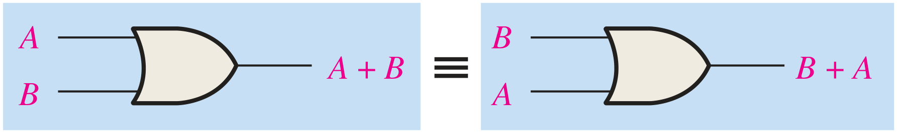
กฎการสลับที่ของการคูณสำหรับตัวแปร 2 ตัวสามารถเขียนได้ดังนี้
กฎนี้กล่าวว่าลำดับของตัวแปรที่ทำการ AND กันนั้นสามารถสลับที่กันได้โดยจะไม่เกิดความแตกต่างของผลลัพธ์ เมื่อเราประยุกต์ใช้พีชคณิตบูลีนกับวงจรลอจิก การคูณกับการ AND จึงเป็นเรื่องเดียวกัน รูปที่ 4.2 ได้แสดงว่ากฎการสลับที่สามารถใช้ได้กับ AND gate กล่าวคือไม่ว่าอินพุต A หรือ B จะอยู่ตำแหน่งใดของ AND gate ก็ไม่มีผลต่อเอาต์พุต
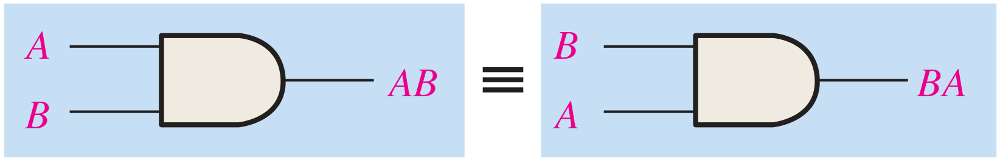
4.3.1.2กฎการเปลี่ยนกลุ่ม
กฎการเปลี่ยนกลุ่มของการบวกสามารถเขียนโดยการใช้ตัวแปรสามตัวดังนี้
กฎข้อนี้กล่าวว่าเมื่อทำการ OR ตัวแปรตั้งแต่ 2 ตัวขึ้นไป การเปลี่ยนกลุ่มของการ OR กันจะไม่ทำให้เกิดผลลัพธ์ที่แตกต่างกันแต่อย่างใด ดังจะเห็นได้จากการประยุกต์ใช้กฎนี้กับบรรดา OR gate ในรูปที่ 4.3
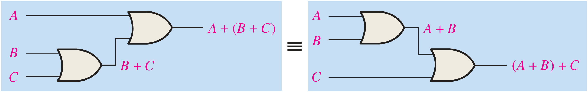
กฎการเปลี่ยนกลุ่มของการคูณสามารถเขียนโดยการใช้ตัวแปรสามตัวดังนี้
กฎข้อนี้กล่าวว่าเมื่อทำการ AND ตัวแปรตั้งแต่ 2 ตัวขึ้นไป การเปลี่ยนกลุ่มของการ AND กันจะไม่ทำให้เกิดผลลัพธ์ที่แตกต่างกันแต่อย่างใด ดังจะเห็นได้จากการประยุกต์ใช้กฎนี้กับบรรดา AND gate ในรูปที่ 4.4
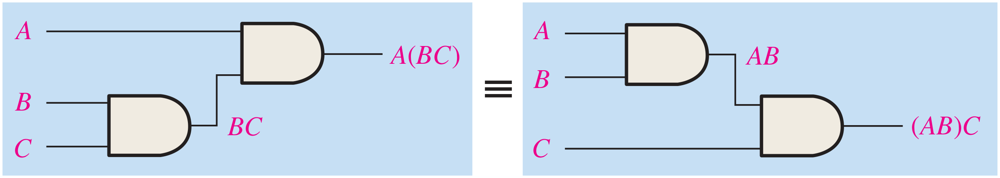
4.3.1.3กฎการกระจาย
กฎการกระจายสามารถเขียนได้ดังนี้
กฎนี้กล่าวว่าการ OR ตัวแปรตั้งแต่ 2 ตัวขึ้นไปแล้วนำเอาผลลัพธ์ที่ได้มาทำ AND กับตัวแปรเดี่ยวใด ๆ จะมีค่าเท่ากับการนำตัวแปรเดี่ยวนั้นมา AND กับตัวแปรอื่นแต่ละตัว แล้วจึงค่อยนำผลลัพธ์ที่ได้จากการ AND (ผลคูณ) มาทำการ OR กัน และกฎการกระจายนี้ในทางตรงกันข้ามก็คือความสามารถในการแยกแฟกเตอร์ เช่น AB + AC = A(B + C) รูปที่ 4.5 แสดงให้เห็นถึงการนำกฎการกระจายไปใช้กับวงจรเกท
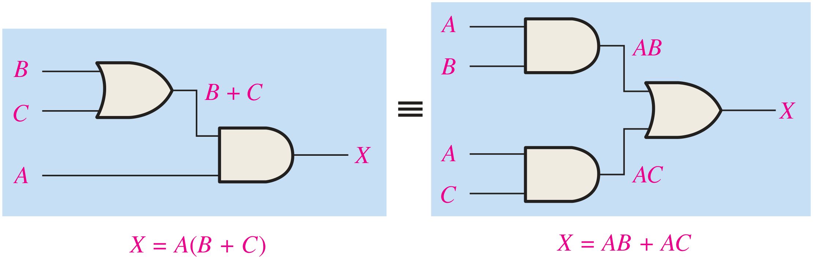
4.3.2 หลักเกณฑ์ของพีชคณิตบูลีน (Rules of Boolean Algebra)
ตารางที่ 4.1 เป็นรายการของหลักเกณฑ์พื้นฐานทั้ง 12 ข้อที่จะเป็นประโยชน์ในการจัดการ (manipulate) และทำให้สมการบูลีนอยู่ในรูปแบบที่ง่ายที่สุด (simplify)
| 1 | A + 0 = A | 7 | A · A = A | |
| 2 | A + 1 = 1 | 8 | A · A = 0 | |
| 3 | A · 0 = 0 | 9 | A = A | |
| 4 | A · 1 = A | 10 | A + AB = A | |
| 5 | A + A = A | 11 | A + AB = A + B | |
| 6 | A + A = 1 | 12 | (A + B)(A + C) = A + BC |
หลักเกณฑ์ข้อที่ 1 A + 0 = A ตัวแปรใด ๆ ที่นำมา OR กับ 0 จะได้ผลลัพธ์เป็นตัวแปรนั้น ๆ ดังนั้นถ้าตัวแปรอินพุต A เป็น 1 ตัวแปรเอาต์พุต X จะมีค่าเท่ากับ 1 ซึ่งก็คือค่าของ A ในขณะนั้น แต่ถ้าเปลี่ยนเป็นตัวแปร A มีค่าเป็น 0 เอาต์พุตที่ได้ก็จะเป็น 0 ซึ่งก็คือค่าของ A ในขณะนั้นเช่นกัน หลักเกณฑ์นี้แสดงเอาไว้ในรูปที่ 4.6 ซึ่งขาอินพุตขาล่างกำหนดค่าคงที่เป็น 0
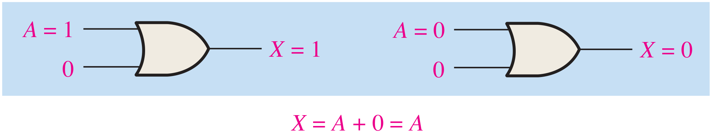
หลักเกณฑ์ข้อที่ 2 A + 1 = 1 ตัวแปรใด ๆ ที่ OR กับ 1 จะได้ผลลัพธ์เท่ากับ 1 เสมอ ไม่ว่าค่าของตัวแปรนั้น ๆ จะเป็นอะไรก็ตาม หลักเกณฑ์นี้แสดงเอาไว้ในรูปที่ 4.7 ซึ่งขาอินพุตขาล่างกำหนดค่าคงที่เป็น 1
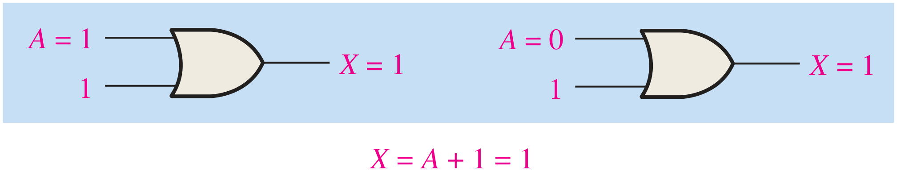
หลักเกณฑ์ข้อที่ 3 A · 0 = 0 ตัวแปรใด ๆ ที่ AND กับ 0 จะได้ผลลัพธ์เท่ากับ 0 เสมอ ไม่ว่าค่าของตัวแปรนั้น ๆ จะเป็นอะไรก็ตาม หลักเกณฑ์นี้แสดงเอาไว้ในรูปที่ 4.8 ซึ่งขาอินพุตขาล่างกำหนดค่าคงที่เป็น 0
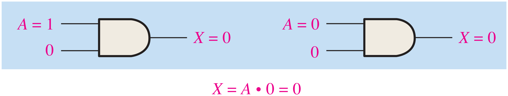
หลักเกณฑ์ข้อที่ 4 A · 1 = A ตัวแปรใด ๆ ที่นำมา AND กับ 1 จะได้ผลลัพธ์เป็นตัวแปรนั้น ๆ เสมอ ถ้า A เป็น 0 เอาต์พุตของ AND gate จะได้ 0 และเมื่อ A เป็น 1 เอาต์พุตของ AND gate จะได้ 1 เนื่องจากอินพุตทั้งสองเป็น 1 หลักเกณฑ์นี้แสดงเอาไว้ในรูปที่ 4.9 ซึ่งขาอินพุตขาล่างกำหนดค่าคงที่เป็น 1
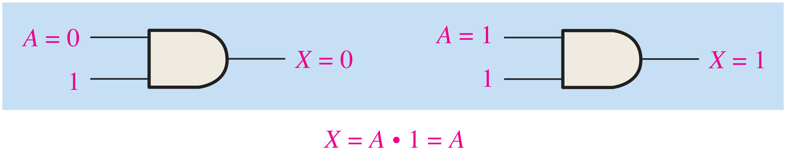
หลักเกณฑ์ข้อที่ 5 A + A = A ตัวแปรใด ๆ ที่ทำการ OR กับตัวมันเองจะได้ผลลัพธ์เท่ากับตัวแปรนั้นเอง ถ้า A เป็น 0 ดังนั้น 0 + 0 = 0 และเมื่อ A เป็น 1 จะได้ 1 + 1 = 1 หลักเกณฑ์นี้แสดงเอาไว้ในรูปที่ 4.10 ซึ่งอินพุตทั้งสองเป็นตัวแปรเดียวกัน
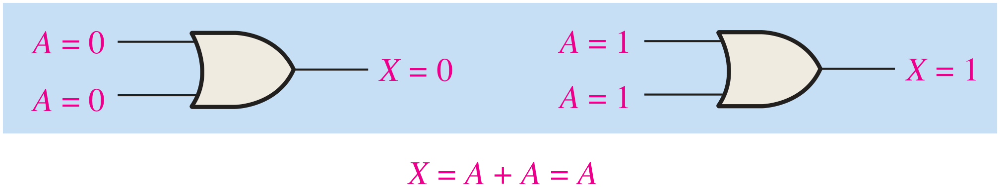
หลักเกณฑ์ข้อที่ 6 A + A = 1 ตัวแปรใด ๆ ที่ทำการ OR กับ complement ของตัวมันเองจะได้ผลลัพธ์เป็น 1 เสมอ ถ้า A เป็น 0 ดังนั้น 0 + 0 = 1 และเมื่อ A เป็น 1 จะได้ 1 + 1 = 1 หลักเกณฑ์นี้แสดงเอาไว้ในรูปที่ 4.11 ซึ่งอินพุตหนึ่งเป็น complement ของอีกอินพุตหนึ่ง
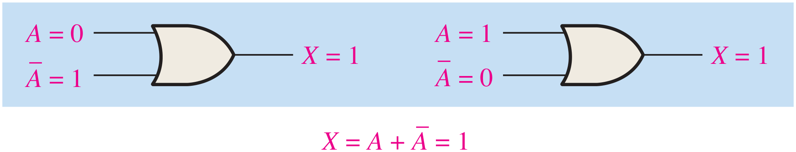
หลักเกณฑ์ข้อที่ 7 A · A = A ตัวแปรใด ๆ ที่ทำการ AND กับตัวมันเองจะได้ผลลัพธ์เท่ากับตัวแปรนั้น ถ้า A เป็น 0 ดังนั้น 0 · 0 = 0 และเมื่อ A เป็น 1 จะได้ 1 · 1 = 1 หลักเกณฑ์นี้แสดงเอาไว้ในรูปที่ 4.12 ซึ่งอินพุตทั้งสองเป็นตัวแปรเดียวกัน
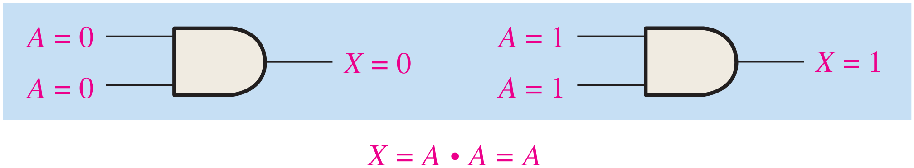
หลักเกณฑ์ข้อที่ 8 A · A = 0 ตัวแปรใด ๆ ที่ทำการ AND กับ complement ของตัวมันเองจะได้ผลลัพธ์เป็น 0 เสมอ เพราะไม่ A ก็ A ตัวใดตัวหนึ่งจะต้องมีค่าเป็น 0 และเมื่อมี 0 ที่อินพุตหนึ่งของ AND gate ก็จะได้เอาต์พุตเป็น 0 อย่างแน่นอน หลักเกณฑ์นี้แสดงเอาไว้ในรูปที่ 4.13
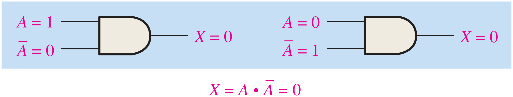
หลักเกณฑ์ข้อที่ 9 A = A การทำ complement ซ้อนสองชั้นที่ตัวแปรใด ๆ จะได้ผลลัพธ์เท่ากับตัวแปรนั้น ๆ เพราะถ้าเริ่มจากตัวแปร A เมื่อทำการ complement ครั้งแรกก็จะได้ A และเมื่อนำเอา A มา complement ก็จะได้ A ซึ่งก็คือตัวแปรดั้งเดิม หลักเกณฑ์ข้อนี้แสดงเอาไว้ในรูปที่ 4.14 ที่ใช้อินเวอร์เตอร์
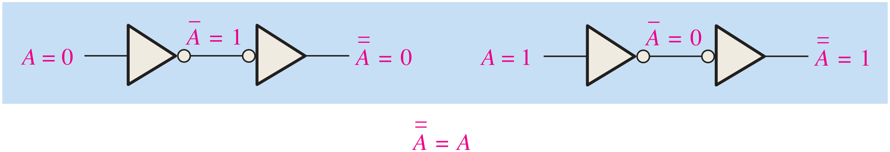
หลักเกณฑ์ข้อที่ 10 A + AB = A หลักเกณฑ์ข้อนี้สามารถพิสูจน์ได้ด้วยการประยุกต์ใช้กฎการกระจายร่วมกับหลักเกณฑ์ข้อที่ 2 และข้อที่ 4 ดังต่อไปนี้
เราสามารถพิสูจน์ด้วยตารางที่ 4.2 ที่แสดงตารางค่าความจริงและผลลัพธ์ของการทำให้วงจรลอจิกง่ายขึ้น
| A | B | AB | A + AB |
|---|---|---|---|
| 0 | 0 | 0 | 0 |
| 0 | 1 | 0 | 0 |
| 1 | 0 | 0 | 1 |
| 1 | 1 | 1 | 1 |
| equal |
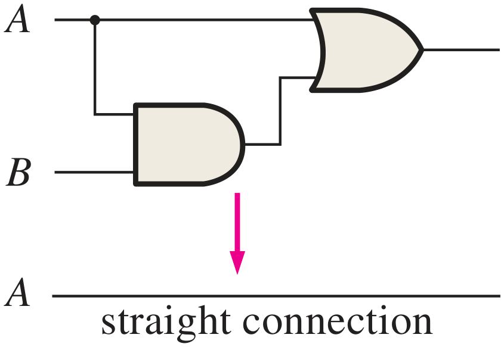
คอลัมน์ A กับคอลัมน์ A + AB มีค่าเท่ากันทุกแถว (equal) วงจรทางขวาจึงลดรูปเหลือเพียงการต่อสาย A ตรงไปยังเอาต์พุต (straight connection)
หลักเกณฑ์ข้อที่ 11 A + AB = A + B สามารถพิสูจน์ได้ดังต่อไปนี้
เราสามารถพิสูจน์ด้วยตารางที่ 4.3 ที่แสดงตารางค่าความจริงและผลลัพธ์ของการทำให้วงจรลอจิกง่ายขึ้น
| A | B | AB | A + AB | A + B |
|---|---|---|---|---|
| 0 | 0 | 0 | 0 | 0 |
| 0 | 1 | 1 | 1 | 1 |
| 1 | 0 | 0 | 1 | 1 |
| 1 | 1 | 0 | 1 | 1 |
| equal |
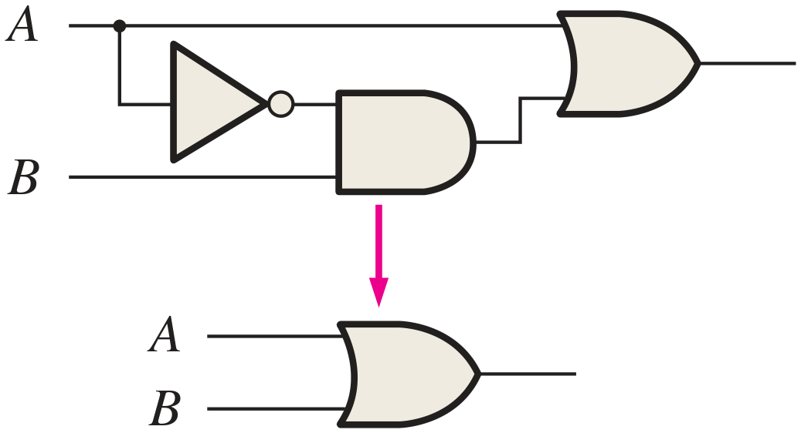
คอลัมน์ A + AB กับคอลัมน์ A + B มีค่าเท่ากันทุกแถว (equal) วงจรทางขวาส่วนบนจึงลดรูปเป็น OR gate เพียงตัวเดียว
หลักเกณฑ์ข้อที่ 12 (A + B)(A + C) = A + BC สามารถพิสูจน์ได้ดังต่อไปนี้
เราสามารถพิสูจน์ด้วยตารางที่ 4.4 ที่แสดงตารางค่าความจริงและผลลัพธ์ของการทำให้วงจรลอจิกง่ายขึ้น
| A | B | C | A + B | A + C | (A + B)(A + C) | BC | A + BC |
|---|---|---|---|---|---|---|---|
| 0 | 0 | 0 | 0 | 0 | 0 | 0 | 0 |
| 0 | 0 | 1 | 0 | 1 | 0 | 0 | 0 |
| 0 | 1 | 0 | 1 | 0 | 0 | 0 | 0 |
| 0 | 1 | 1 | 1 | 1 | 1 | 1 | 1 |
| 1 | 0 | 0 | 1 | 1 | 1 | 0 | 1 |
| 1 | 0 | 1 | 1 | 1 | 1 | 0 | 1 |
| 1 | 1 | 0 | 1 | 1 | 1 | 0 | 1 |
| 1 | 1 | 1 | 1 | 1 | 1 | 1 | 1 |
| equal |
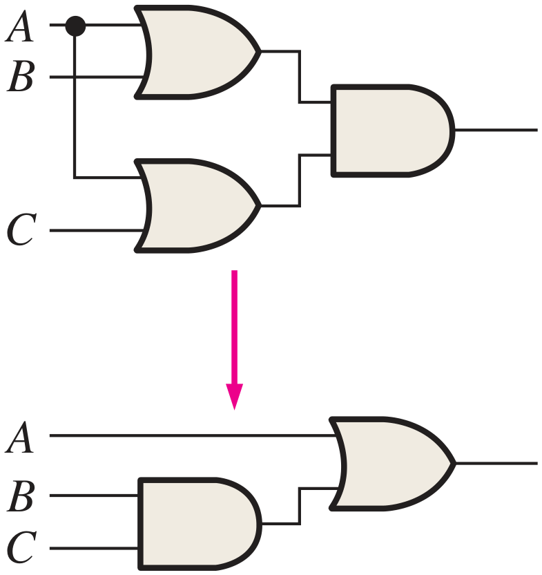
คอลัมน์ (A + B)(A + C) กับคอลัมน์ A + BC มีค่าเท่ากันทุกแถว (equal) วงจรทางขวาส่วนบนจึงลดรูปเป็นวงจรส่วนล่าง
4.4 ทฤษฎีบทของ DeMorgan
DeMorgan เป็นนักคณิตศาสตร์ที่เสนอสองทฤษฎีบทที่เป็นส่วนประกอบสำคัญในพีชคณิตบูลีน ซึ่งทฤษฎีบทของ DeMorgan นั้นสามารถใช้ตรวจสอบความถูกต้องของความเท่ากันระหว่าง NAND กับ Negative-OR และระหว่าง NOR กับ Negative-AND ได้
Complement ของผลคูณของเหล่าตัวแปรจะเท่ากับการทำ complement ของตัวแปรแต่ละตัวแล้วเอามาบวกกัน
หรืออาจกล่าวได้อีกอย่างหนึ่งว่า complement ของการนำตัวแปรตั้งแต่ 2 ตัวขึ้นไปมา AND กันจะมีค่าเท่ากับการ OR กันของ complement ของแต่ละตัวแปร
เราสามารถเขียนสมการลอจิกของทฤษฎีบทนี้สำหรับการใช้ตัวแปร 2 ตัวได้ว่า
Complement ของผลบวกของเหล่าตัวแปรจะเท่ากับการทำ complement ของตัวแปรแต่ละตัวแล้วเอามาคูณกัน
หรืออาจกล่าวได้อีกอย่างหนึ่งว่า complement ของการนำตัวแปรตั้งแต่ 2 ตัวขึ้นไปมา OR กันจะมีค่าเท่ากับการ AND กันของ complement ของแต่ละตัวแปร
เราสามารถเขียนสมการลอจิกของทฤษฎีบทนี้สำหรับการใช้ตัวแปร 2 ตัวได้ว่า
รูปที่ 4.15 แสดงการเทียบเท่ากันของเกทชนิดต่าง ๆ และตารางค่าความจริงของสมการที่ 4.6 และ 4.7
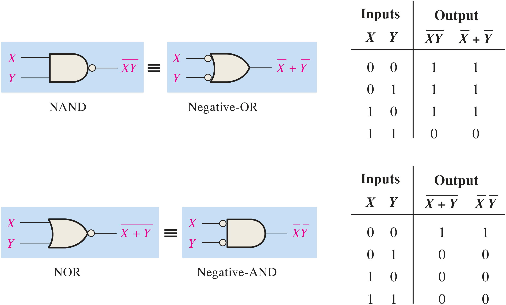
ทฤษฎีบทของ DeMorgan สามารถประยุกต์ใช้กับสมการที่ประกอบด้วยตัวแปรมากกว่า 2 ตัว ในตัวอย่างต่อไปนี้จะแสดงให้เห็นถึงการใช้ทฤษฎีบทของ DeMorgan กับสมการ 3 ตัวแปรและ 4 ตัวแปร
จงใช้ทฤษฎีบทของ DeMorgan สำหรับสมการลอจิก XYZ และ X + Y + Z
แสดงวิธีทำ
จงใช้ทฤษฎีบทของ DeMorgan สำหรับสมการลอจิก WXYZ และ W + X + Y + Z
แสดงวิธีทำ
ตัวแปรแต่ละตัวในทฤษฎีบทของ DeMorgan ที่ได้ระบุในสมการที่ 4.6 และ 4.7 สามารถแทนพจน์ที่ประกอบด้วยตัวแปรอื่นหลาย ๆ ตัวได้ด้วย เช่น ให้ X เป็นตัวแทนของพจน์ AB + C และให้ Y เป็นตัวแทนของพจน์ A + BC ดังนั้นเมื่อเราประยุกต์ใช้ทฤษฎีบทของ DeMorgan ในสมการ XY = X + Y ด้วยการใช้แทน (AB + C)(A + BC) เราจะได้
เราจะได้ผลลัพธ์แยกออกเป็น 2 พจน์ คือ (AB + C) และ (A + BC) ซึ่งเรายังสามารถใช้ทฤษฎีบทของ DeMorgan อันได้แก่สมการ X + Y = XY เพื่อจัดการแต่ละพจน์ได้อีก ซึ่งจะได้เป็น
จากผลลัพธ์นี้จะเห็นว่ายังมีพจน์ที่สามารถใช้ทฤษฎีบทของ DeMorgan จัดการได้อีก ซึ่งได้แก่พจน์ AB และ BC ดังนั้นเราจะได้ผลลัพธ์สุดท้ายเป็น
4.4.1 การประยุกต์ใช้ทฤษฎีบทของ DeMorgan
ต่อไปนี้จะแสดงขั้นตอนในการประยุกต์ใช้ทฤษฎีบทของ DeMorgan และพีชคณิตบูลีนกับนิพจน์ต่อไปนี้
- ขั้นที่ 1 กำหนดพจน์ที่จะทำการใช้ทฤษฎีบทของ DeMorgan และให้คิดว่าแต่ละพจน์คือตัวแปรเดี่ยว ซึ่งในที่นี้จะกำหนดให้ A + BC = X และให้ D(E + F) = Y
- ขั้นที่ 2 จาก X + Y = XY จะได้ว่า
(A + BC) + (D(E + F)) = (A + BC)(D(E + F))
- ขั้นที่ 3 ใช้หลักเกณฑ์ข้อที่ 9 (A = A) เพื่อทำการหักล้างเส้น bar ที่ซ้อนกันสำหรับพจน์ซ้ายมือ (ตรงนี้ไม่ใช่การใช้ทฤษฎีบทของ DeMorgan) จะได้
(A + BC)(D(E + F)) = (A + BC)(D(E + F))
- ขั้นที่ 4 ใช้ทฤษฎีบทของ DeMorgan กับพจน์ที่สอง
(A + BC)(D(E + F)) = (A + BC)(D + (E + F))
- ขั้นที่ 5 ใช้หลักเกณฑ์ข้อที่ 9 (A = A) เพื่อทำการหักล้างเส้น bar ที่ซ้อนกันสำหรับส่วน E + F ของพจน์ขวามือ จะได้
(A + BC)(D + (E + F)) = (A + BC)(D + E + F)
จงใช้ทฤษฎีบทของ DeMorgan กับนิพจน์ต่อไปนี้
แสดงวิธีทำ
(I) ให้ A + B + C = X และให้ D = Y ซึ่งจะทำให้นิพจน์ (A + B + C)D สามารถเขียนได้เป็น
ต่อไปเราจะใช้ทฤษฎีบทของ DeMorgan กับพจน์ A + B + C จะได้
(II) ให้ ABC = X และ DEF = Y ซึ่งจะทำให้นิพจน์ ABC + DEF สามารถเขียนได้เป็น
ต่อไปเราจะใช้ทฤษฎีบทของ DeMorgan กับพจน์ (ABC) และ (DEF) จะได้
(III) ให้ AB = X, ให้ CD = Y และให้ EF = Z ทำให้นิพจน์ AB + CD + EF สามารถเขียนอยู่ในรูปของ X + Y + Z = XYZ และจะสามารถเขียนได้เป็น
ต่อไปเราจะใช้ทฤษฎีบทของ DeMorgan กับพจน์ AB, CD และ EF เราจะได้
จงใช้ทฤษฎีบทของ DeMorgan กับนิพจน์ต่อไปนี้
แสดงวิธีทำ
นิพจน์บูลีนสำหรับ XOR gate คือ AB + AB จงใช้เป็นจุดเริ่มต้นในการหานิพจน์ของ XNOR โดยใช้ทฤษฎีบทของ DeMorgan รวมทั้งกฎหรือหลักเกณฑ์ของพีชคณิตบูลีนให้เป็นผลสำเร็จ
แสดงวิธีทำ
เริ่มจากการทำ complement นิพจน์ของ XOR แล้วจึงค่อยประยุกต์ใช้ทฤษฎีบทของ DeMorgan ดังต่อไปนี้
ต่อไปให้ใช้กฎการกระจายและหลักเกณฑ์ข้อที่ 8 (A · A = 0)
ดังนั้นนิพจน์ของ XNOR ก็คือ AB + AB ซึ่งนิพจน์นี้จะมีค่าเป็น 1 เมื่อตัวแปรทั้งสองเป็น 0 หรือเป็น 1 ทั้งคู่
4.5 การใช้พีชคณิตบูลีนเพื่อวิเคราะห์วงจรลอจิก
วงจรที่ผสานการทำงานของเกทต่าง ๆ เข้าด้วยกัน เราเรียกว่า วงจรคอมบิเนชัน ซึ่งมีกรณีของอินพุตที่เกิดขึ้นจำนวนมากน้อยขึ้นอยู่กับปริมาณของขาสัญญาณอินพุต ทั้งนี้การที่เราจะรู้ว่าเอาต์พุตที่เกิดขึ้นในแต่ละกรณีจะเป็นอย่างไรนั้น เราสามารถใช้พีชคณิตบูลีนในการอธิบายปฏิบัติการของวงจรนั้น ๆ ได้
4.5.1 นิพจน์บูลีนสำหรับวงจรลอจิก
การหานิพจน์บูลีนสำหรับวงจรลอจิกหนึ่ง ๆ ทำได้จากการเริ่มต้นที่อินพุตทางซ้ายมือสุดและขยับไปยังเอาต์พุตสุดท้าย โดยให้เขียนนิพจน์ของแต่ละเกทจากต้นจนจบ สำหรับตัวอย่างวงจรที่แสดงในรูปที่ 4.16 นั้นจะสามารถกำหนดนิพจน์บูลีนได้ตามขั้นตอนดังต่อไปนี้
- AND gate ที่อยู่ซ้ายมือสุดมีอินพุต C และ D จะมีนิพจน์เป็น CD
- เอาต์พุตของ AND gate ซ้ายมือสุดเป็นอินพุตหนึ่งของ OR gate ซึ่งมี B เป็นอินพุตอีกขาหนึ่ง ดังนั้นนิพจน์ของ OR gate นี้จะเป็น B + CD
- เอาต์พุตของ OR gate เป็นอินพุตหนึ่งของ AND gate ตัวขวามือสุดที่มี A เป็นอีกอินพุตหนึ่ง ดังนั้นนิพจน์สำหรับ AND gate จะเป็น A(B + CD) ซึ่งเป็นเอาต์พุตสุดท้าย อันจะเป็นนิพจน์ของทั้งวงจรนั่นเอง
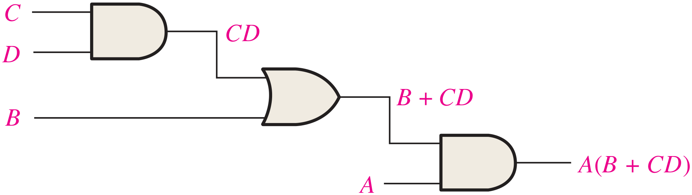
4.5.2 การสร้างตารางค่าความจริงจากวงจรลอจิก
เมื่อเราสามารถระบุนิพจน์บูลีนสำหรับวงจรลอจิกนั้น ๆ ได้แล้ว เราก็จะสามารถสร้างตารางค่าความจริงที่จะแสดงค่าเอาต์พุตจากกรณีต่าง ๆ ของอินพุตของวงจรได้ในลำดับถัดไป สำหรับวงจรในรูปที่ 4.16 นั้นมีอินพุตทั้งหมด 4 อินพุต ซึ่งกำกับด้วยตัวแปร 4 ตัว ได้แก่ A, B, C และ D ซึ่งทำให้มีกรณีที่เป็นไปได้เท่ากับ 24 = 16 กรณี
4.5.2.1การประเมินนิพจน์
การที่จะประเมินนิพจน์ A(B + CD) ให้เริ่มจากการหาค่าของตัวแปรต่าง ๆ ที่ทำให้นิพจน์บูลีนของวงจรมีค่าเป็น 1 ด้วยการใช้หลักเกณฑ์ของการบวกและการคูณ สำหรับกรณีนี้นิพจน์บูลีนจะมีค่าเท่ากับ 1 เฉพาะกรณีที่ A = 1 และ B + CD = 1 เนื่องจาก
เมื่อพิจารณากรณีที่พจน์ B + CD มีค่าเป็น 1 ได้ก็ต่อเมื่อ B = 1 หรือ CD = 1 หรือทั้ง B และ CD มีค่าเท่ากับ 1 ดังแสดงให้เห็นต่อไปนี้
พจน์ CD = 1 เป็นได้กรณีเดียว คือ C = 1 และ D = 1
- 1เมื่อ A = 1 และ B = 1 ไม่ว่าค่าของ C กับ D จะเป็นอะไรก็ตาม
- 2เมื่อ A = 1 และ C = 1 และ D = 1 ไม่ว่า B จะเป็นอะไรก็ตาม
4.5.2.2ใส่ผลลัพธ์จากการประเมินลงไปยังตารางค่าความจริง
ขั้นแรกเริ่มจากการสร้างตารางจากกรณีอินพุตที่เป็นไปได้ทั้ง 16 กรณี ดังที่เห็นในตารางที่ 4.5
| INPUTS | OUTPUT | |||
|---|---|---|---|---|
| A | B | C | D | A(B + CD) |
จะเห็นว่าค่าเอาต์พุตที่เป็น 1 สามารถระบุได้ตามที่เราประเมินเอาไว้ในหัวข้อที่แล้ว (ลูกศรสีส้มแทนกรณี 1 และลูกศรสีฟ้าแทนกรณี 2 โดยแถว ABCD = 1111 เข้าเงื่อนไขทั้งสองกรณี) และเมื่อเราลง 1 ไปในเอาต์พุตตามกรณีที่เป็นไปได้ทั้งหมดแล้ว ก็จะเหลือกรณีที่เอาต์พุตเป็น 0 ทั้งหมด และเราก็จะได้ตารางค่าความจริงที่เสร็จสมบูรณ์ อันจะบ่งปฏิบัติการของวงจรลอจิกนั้น ๆ ได้อย่างถูกต้องโดยอาศัยพีชคณิตบูลีนดังที่ได้เรียนมาข้างต้น
สรุปท้ายบท
- พีชคณิตบูลีนเกิดจากผลงานของจอร์จ บูล (ค.ศ. 1854) และถูกนำมาใช้วิเคราะห์และออกแบบวงจรลอจิกโดยคล็อด แชนนอน (ค.ศ. 1938)
- การบวกแบบบูลีนเทียบเท่ากับ OR (sum term เป็น 0 เมื่อทุก literal เป็น 0) ส่วนการคูณแบบบูลีนเทียบเท่ากับ AND (product term เป็น 1 เมื่อทุก literal เป็น 1)
- กฎพื้นฐาน ได้แก่ กฎการสลับที่ A + B = B + A, AB = BA · กฎการเปลี่ยนกลุ่ม · กฎการกระจาย A(B + C) = AB + AC
- หลักเกณฑ์ 12 ข้อ เช่น A + A = 1, A · A = 0, A = A, A + AB = A, A + AB = A + B และ (A + B)(A + C) = A + BC ใช้จัดรูปและลดรูปสมการบูลีน
- ทฤษฎีบทของ DeMorgan: XY = X + Y และ X + Y = XY แสดงความเทียบเท่าของ NAND กับ Negative-OR และ NOR กับ Negative-AND และใช้ได้กับตัวแปรหรือพจน์จำนวนเท่าใดก็ได้
- การวิเคราะห์วงจรลอจิก: เขียนนิพจน์ของแต่ละเกทจากอินพุตไปยังเอาต์พุต แล้วประเมินนิพจน์เพื่อสร้างตารางค่าความจริงครบทั้ง 2n กรณี
แบบทดสอบท้ายบท
เลือกคำตอบ ระบบจะเฉลยพร้อมคำอธิบายทันที (ไม่มีการบันทึกคะแนน ใช้สำหรับทบทวนด้วยตนเอง)
ปฏิบัติการสัปดาห์ที่ 5 · พิสูจน์ความเทียบเท่าของวงจร
ตามแผนการสอนใน มคอ.3 — ใช้ไอซีตระกูล 74 ต่อวงจรสองแบบที่พีชคณิตบูลีนบอกว่า “เท่ากัน” แล้วยืนยันด้วยการวัดจริงครบทุกกรณีของอินพุต
🧰 อุปกรณ์
- ไอซี 7400, 7402, 7404, 7408, 7432
- แผงทดลอง แหล่งจ่าย 5 V DIP switch 4 ตัว LED + ตัวต้านทาน
- ตัวเก็บประจุ 0.1 µF ต่อไอซีทุกตัว
🧭 วิธีพิสูจน์
- เขียนนิพจน์ของวงจรทั้งสองฝั่ง
- สร้างตารางค่าความจริงที่คาดไว้ (ใช้แบบจำลองในหัวข้อ 4.3–4.5 ตรวจได้)
- ต่อวงจรทั้งสองบนแผงเดียวกัน ป้อนอินพุตชุดเดียวกัน
- บันทึก LED ของทั้งสองวงจรครบ 2ⁿ กรณี — ต้องเท่ากันทุกแถว
📋 ใบงานปฏิบัติการที่ 3 (สัปดาห์ที่ 5)
- กฎการกระจาย: ต่อ A(B + C) (7432 + 7408) เทียบกับ AB + AC (7408 สองตัว + 7432) ครบ 8 กรณี
- หลักเกณฑ์ข้อที่ 10: ต่อ A + AB แล้วเทียบกับการต่อสาย A ตรงไปที่เอาต์พุต
- หลักเกณฑ์ข้อที่ 11: ต่อ A + AB (7404 + 7408 + 7432) เทียบกับ A + B
- ทฤษฎีบทของ DeMorgan: ต่อ NAND (7400) เทียบกับ Negative-OR (7404 สองตัวเข้า 7432) และ NOR (7402) เทียบกับ Negative-AND (7404 + 7408)
- วิเคราะห์วงจร: ต่อวงจรในรูปที่ 4.16 วัดเอาต์พุตครบ 16 กรณี เปรียบเทียบกับตารางที่ 4.5
- นับไอซี: สำหรับข้อ 1 และ 3 นับจำนวนเกทและจำนวนตัวถังของวงจรก่อนและหลังลดรูป แล้วอภิปรายว่าการลดรูปช่วยอะไร (ปูทางสู่บทที่ 5)
ส่ง: นิพจน์ + ตารางค่าความจริงที่คาดไว้ + ตารางผลวัดจริง + สรุปว่าเทียบเท่ากันหรือไม่ (ประเมินในหมวดแบบฝึกหัดและรายงานผลการทดลอง 20%)
ใช้แบบจำลองการจัดขาไอซีใน บทที่ 3 หัวข้อ 3.7.1 วางแผนการต่อสายก่อนต่อวงจรจริง